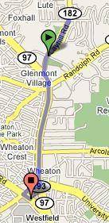
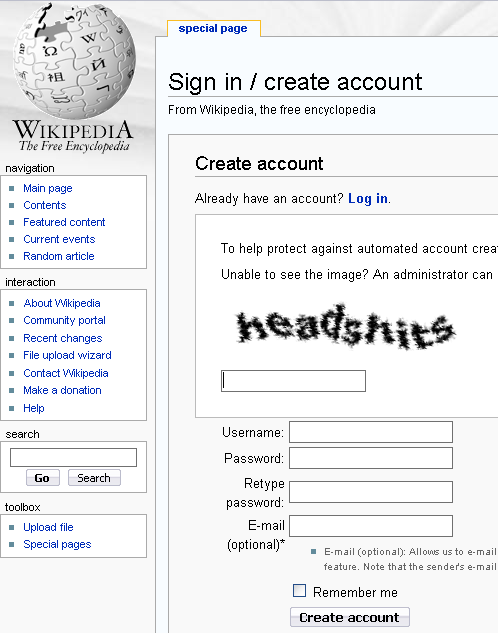

Bad Name For A Gas Station
Gas or a typical frat party?

Tonight Kristina and I went to a Bladensburg 7-11 which is one of a select few that have been converted into a Kwik-E-Mart. It was fun seeing the popular fictional brands as live products such as Buzz Cola and Squishees. The Simpsons convenience store facade was a big hit as there were people coming in taking pictures the whole time we were there. I managed to take a couple picture myself.


Other highlights of the trip included randomly seeing an old friend from college who happened to stop by the store after work and getting a banana Squishee. We also stocked up on Krusty-Os and Buzz Cola for later treats. Yummm! If you want to see a Kwik-E-Mart store near you then you better hurry because as of Saturday, July 28th, all of the stores wil revert back to plain old 7-11s.
I have tickets to see The Simpsons Movie tomorrow night after work and afterwards I will post my review for Simpsons Extravaganza Pt.2.
See all this money? It’s $207 million in cash and was hidden in the walls of a luxurious, Mexico City home belonging to Zhenli Ye Gon. Gon ran a pharmaceuticals company that allegedly was a front to provide Mexican drug cartels with lots of chemicals to make methamphetamine. His house was busted in March but Gon had fled.
This past Monday, U.S. Drug Enforcement Agents apprehended Zhenli at the mall just down the street from my apartment.
At P.J. Rice Bistro, where he and a female acquaintance ordered codfish and baby carrots, DEA agents showed up before dinner was served. “The police came to the table and asked him to go pretty fast,” a bistro employee recalled yesterday. “They didn’t stay in the restaurant too long.”
Apparently Wheaton, Maryland, is a great place to lay low. It is a fairly diverse place. Check out the map.

(via WashingtonPost)
I was signing up to Wikipedia.org so I could contribute to the knowledge when I get this CAPTCHA…

Hmmm…
By the way, did you know CAPTCHA stands for “Completely Automated Public Turing test to tell Computers and Humans Apart.” You can read more about CAPTCHAs on Wikipedia or listen to a great podcast on Security Now Episode #101.
Sometimes I just like to look for random domain names at DomainsBot.com. Here is what I came up with…
CyborgSuperHuman.com or SuperHumanCyborg.com – For those ultra powerful hybrid humans that probably blog. SuperHumanCyborg.org is pretty funny too.
GordPorn.com – For some hot gord on gord action.
SnowPow.com – Like snowplow but hipper!
OuterRouter.com – For those far out Internet switches.
Hunged.com or Hungd.com – Hunged sounds like a cool company name.
iWillVomit.com – Just so you know…
Dizmizz.com – Hipster version of dismiss.
Techsie.com – A tech site for girls.
Loooong.com – extra emphasis on the oooong.
733tr.com – Like Flickr for the leet.
PinkPoop.com – No one will easily forget you with this one.
Here is a little trick. Think of someone famous whom you consider successful. Now I bet the first letter of their last name is in the first half of the alphabet. Was I right?
According to a surname study by Richard Wiseman of The Daily Telegraph, success has a higher chance for those in the first half of the alphabet rather than the latter half. Polling readers Daily telegraph readers, Wiseman asked respondents were asked for their sex, age, surname and rate how successful they had been in various aspects of their life, such as their health, finances, career, and “life in general”. According to his data, the people whose last names begin with A,B,C… rated themselves more successful than those with …X,Y,Z last names.
One theory offered to explain this phenomenon is due to the way we arrange names in a list. In school, lists of students would usually be sorted in alphabetical order based on the surname. Those with last names higher on the list are generally picked first leaving the people lower on the list to be picked last. This may not seem like such a big deal until you consider this short coming spread out over the entire life of the person. When we put this into the perspective of a lifetime it is easy to see how the last half of the alphabet people can be stuck with a lack of confidence. Apparently where we are on the last name list has an impact on how we see ourselves.
This isn’t an absolute rule however, just look at Steve Wozniak, co-founder of Apple. There is also Shaquille O’Neil, Tiger Woods, Oprah Winfrey among others. So don’t despair N-Z last namers, there is still hope you will reach success. You guys just have a slight statistical disadvantage. Sorry.
In case you didn’t notice, today is July 17th, the day on the iCal icon. Weird isn’t it?
Update: It was on this day in 2002 that Apple released the original iCal application. (Thanks Chris!)
These stupid blog chain quizzes are rather annoying, but for once I have been tagged (this time by Randall Bennett). So learn a thing or two about me below and check to see if you have been tagged.
Rules:
- We have to post these rules before we give you the facts.
- Players start with eight random facts/habits about themselves.
- People who are tagged write their own blog post about their eight things and include these rules.
- At the end of your blog post, you need to choose eight people to get tagged and list their names. Don�t forget to leave them a comment telling them they�re tagged and that they should read your blog.
Ready? Go.

Now you know a few things about me, take a moment to find out about the following people. I tag…
… in a yellow jumpsuit no less. Bravo!
(via My Dark Lord Chris)